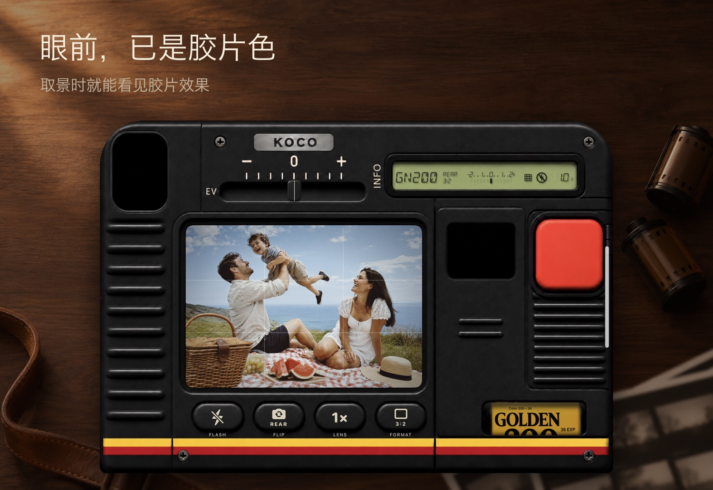
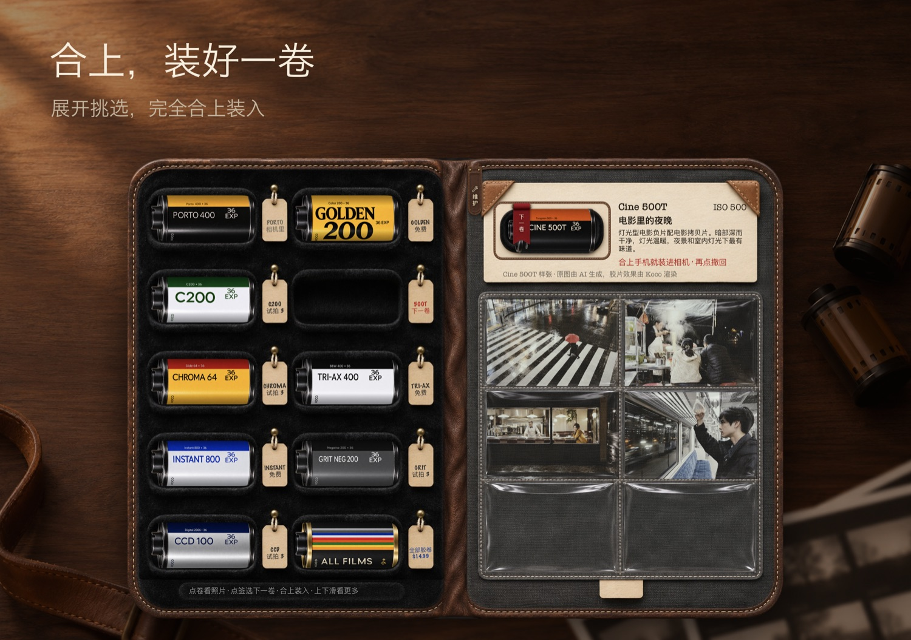
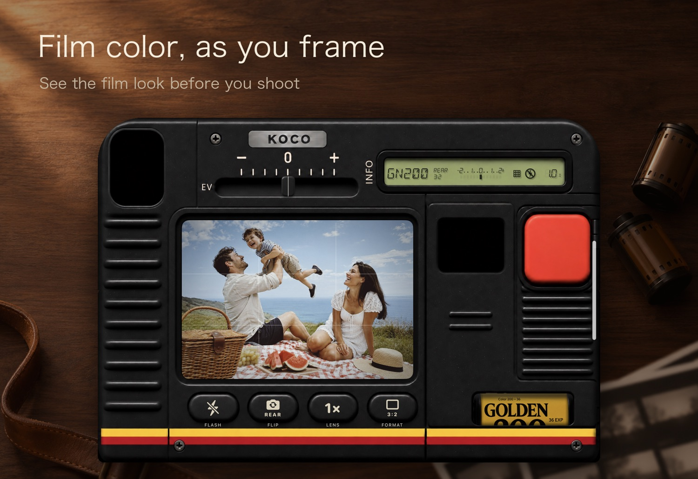
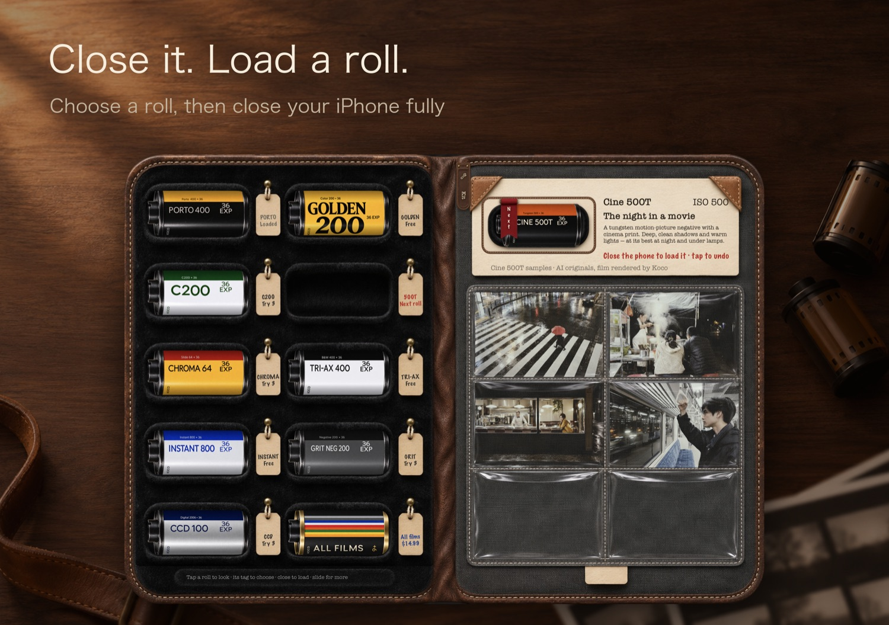

<title>Koco Duo 截图样稿</title>
<meta name="claude:viewport-fit-sides" content="cover">
<style>
:root{--bg:#f3efe6;--fg:#201c17;--muted:#6f675c;--line:#ddd5c6;--accent:#b23b1e}
@media (prefers-color-scheme:dark){:root:not([data-theme="light"]){--bg:#15130f;--fg:#ede7db;--muted:#9b9284;--line:#332e27;--accent:#ec7b52;color-scheme:dark}}
:root[data-theme="dark"]{--bg:#15130f;--fg:#ede7db;--muted:#9b9284;--line:#332e27;--accent:#ec7b52;color-scheme:dark}
body{background:var(--bg);color:var(--fg);font:16px/1.65 -apple-system,"PingFang SC",system-ui,sans-serif;padding-left:max(16px,env(safe-area-inset-left,0px));padding-right:max(16px,env(safe-area-inset-right,0px));padding-block:22px 48px}
main{max-width:900px;margin:0 auto}h1{font-size:22px;margin:0 0 4px}
.sub{color:var(--muted);font-size:14px;margin:0 0 18px;max-width:70ch}
figure{margin:0 0 22px}img{width:100%;height:auto;border-radius:10px;display:block;border:1px solid var(--line)}
figcaption{font-size:14px;color:var(--muted);margin-top:6px}
.tbl{overflow-x:auto}table{border-collapse:collapse;min-width:620px;font-size:14px}td,th{border-bottom:1px solid var(--line);padding:6px 8px;text-align:left;vertical-align:top}
</style>
<main>
<h1>Duo 截图样稿（第二版）</h1>
<p class="sub">按你的意见改了：背景换成 GPT 画的实物桌面（胡桃木、窗光、皮背带和胶卷只在边上露一点），文案重写成文艺、简洁、苹果风但看得懂。界面都是最新版（新胶卷名、卡片托槽）。先看这两张定风格，满意我再做全部 8 张中英文。</p>
<figure><figcaption>第 1 张 · 外屏（中文）</figcaption></figure>
<figure><figcaption>第 3 张 · 内屏（中文）：Cine 500T 被选作下一卷，躺在卡片上</figcaption></figure>
<figure><figcaption>Shot 1 · English</figcaption></figure>
<figure><figcaption>Shot 3 · English</figcaption></figure>
<h2 style="font-size:18px">8 张标题（GPT 和我一起定的首选）</h2>
<div class="tbl"><table>
<tr><th>#</th><th>中文标题 / 副标题</th><th>English</th></tr>
<tr><td>1</td><td>眼前，已是胶片色<br>取景时就能看见胶片效果</td><td>Film color, as you frame<br>See the film look before you shoot</td></tr>
<tr><td>2</td><td>低头，看见另一面<br>半折手机，腰平取景</td><td>A different point of view<br>Half-fold your iPhone for waist-level shooting</td></tr>
<tr><td>3</td><td>合上，装好一卷<br>展开挑选，完全合上装入</td><td>Close it. Load a roll.<br>Choose a roll, then close your iPhone fully</td></tr>
<tr><td>4</td><td>换一卷，换种色彩<br>打开胶卷仓，装入另一卷</td><td>Another roll. Another look.<br>Open the film chamber to change rolls</td></tr>
<tr><td>5</td><td>先拍，再决定<br>三款胶卷免费，其余可试拍</td><td>Try a roll first<br>Three free films. Trial shots for the rest.</td></tr>
<tr><td>6</td><td>这一刻，按下就拍<br>锁屏时，按相机控制键启动</td><td>Press into the moment<br>Launch from the Lock Screen with Camera Control</td></tr>
<tr><td>7</td><td>让变化，动起来<br>把原图与胶片效果分享成视频</td><td>See the change unfold<br>Share original and film looks in one video</td></tr>
<tr><td>8</td><td>照片，就留在这里<br>存在你的 iPhone，无需账号或上传</td><td>Your photos stay here<br>On your iPhone. No account. No photo uploads.</td></tr>
</table></div>
</main>
